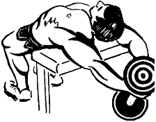

Данное упражнение – не самая лучшая тренировка грудных мышц, потому что здесь сложно использовать большие веса
и максимально стимулировать мышечные волокна. Однако, это упражнение способствует расширению грудной клетки,
поэтому в обязательном порядке должно включаться в программу тренировок молодых атлетов.
Исходное положение:
Поставить гантель торцом на пол возле скамьи.
Лечь на скамью верхней частью спины.
Прогнувшись, взять гантель за верхнюю часть обеими руками. Либо можно попросить партнера подать вам снаряд.
Поднять гантель над грудью, выпрямив руки почти полностью.
Техника выполнения:
На вдохе опустить гантель за голову, сохраняя локти слегка согнутыми.
На выдохе поднять гантель по той же траектории до исходного положения.
Рекомендации:
Упражнение выполнять медленно, без рывков.
В верхней точке не выпрямлять руки в локтях полностью – это чревато травмой локтевого сустава.
В нижней точке всегда стараться опустить снаряд как можно ниже, растягивая грудные мышцы.